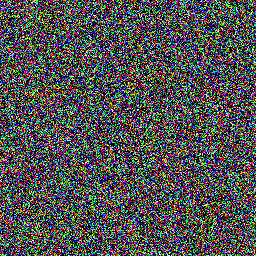
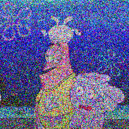
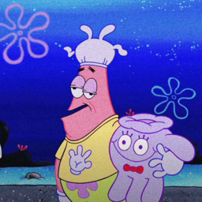
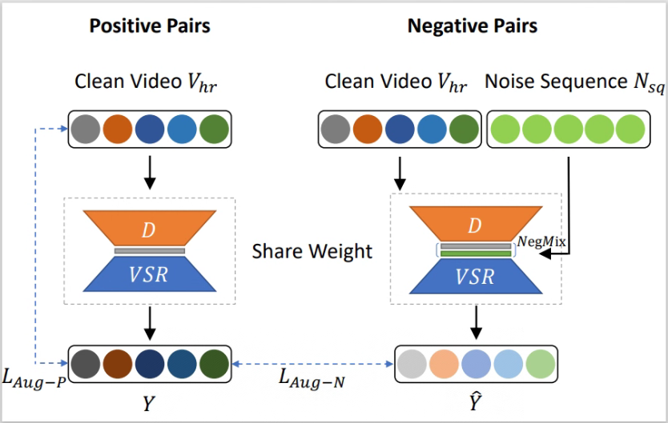

Yexing Song
M.S. in Guangdong University of Technology (2022 - present)Researching machine learning & computer vision. Interested in low-level computer vision.
GitHub - Google Scholar
|  |  |
 |
 |  |


About Me
I am a M.S candidate in the School of Information Engineering, Guangdong University of Technology, advised by Meilin Wang and Yukai Shi.
Publications
2024
|  | Yexing Song, Meilin Wang, Xiaoyu Xian, Zhijing Yang, Yuming Fan, Yukai Shi NegVSR: Augmenting Negatives for Generalized Noise Modeling in Real-World Video Super-Resolution AAAI 2024, in AAAI Conference on Artificial Intelligence. [page] |